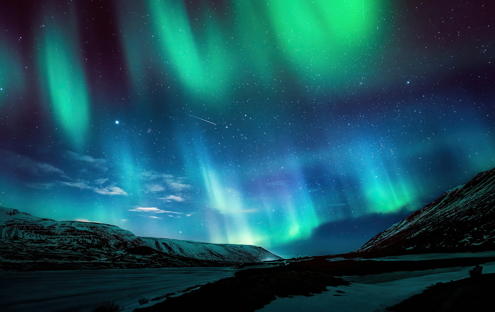
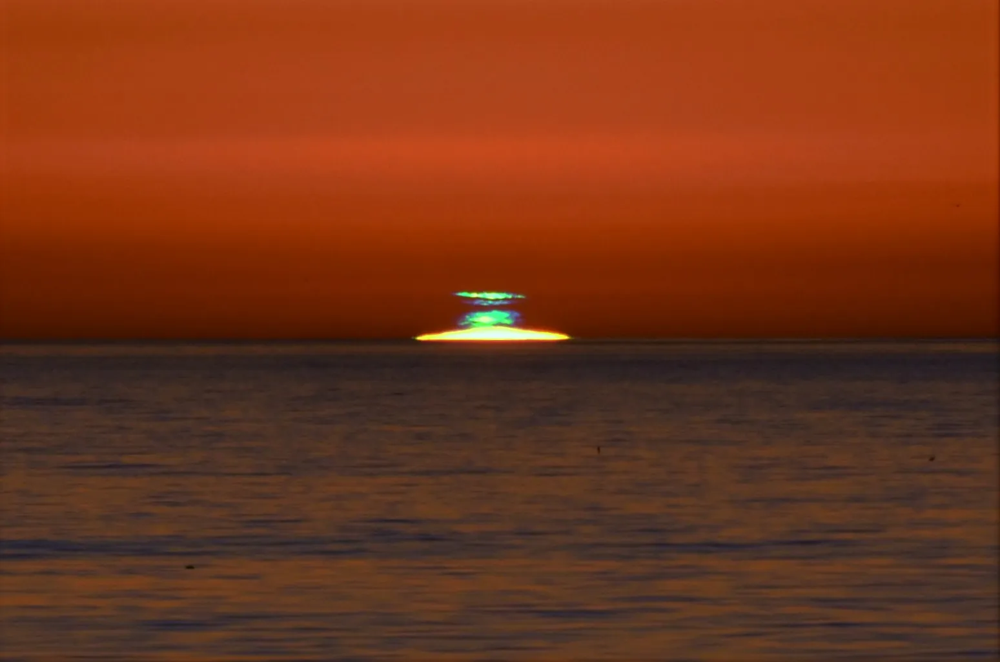
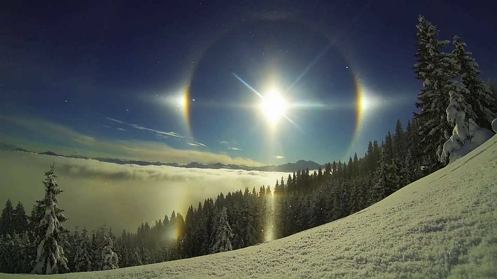
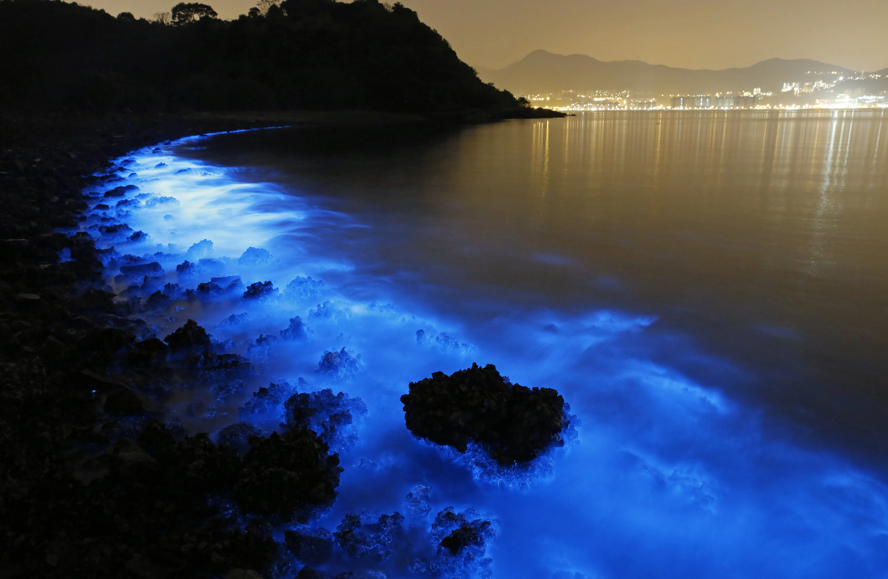
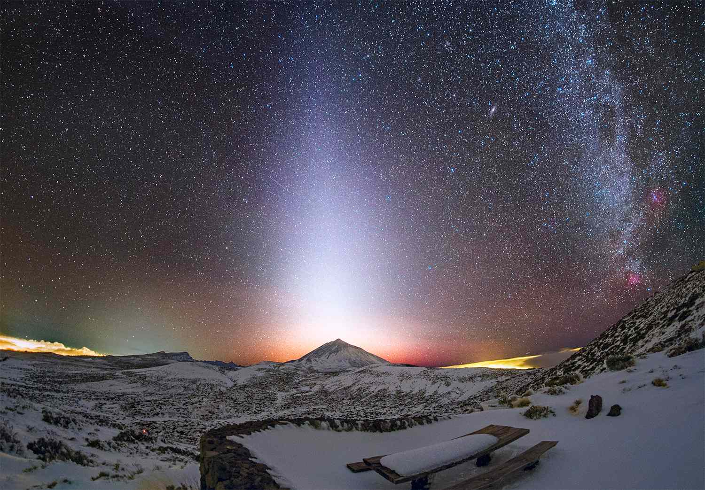

Jawaban singkatnya ada di panjang gelombang cahaya dan cara atmosfer menyaringnya. Begini penjelasan lengkapnya.
Ilustrasi arsip Lumen
Setiap sore, langit memberikan pertunjukan warna yang sepintas terasa sederhana: jingga di barat, ungu di atasnya, lalu biru yang menggelap. Padahal di baliknya ada fisika yang elegan — cahaya Matahari berinteraksi dengan atmosfer Bumi berdasarkan panjang gelombangnya.
Cahaya putih bukan satu warna
Cahaya Matahari terlihat putih, padahal sebenarnya merupakan gabungan seluruh warna pelangi, masing-masing dengan panjang gelombang berbeda. Biru dan ungu memiliki gelombang pendek, sedangkan jingga dan merah memiliki gelombang panjang.
Atmosfer sebagai saringan
Ketika Matahari tinggi, cahaya menempuh jalur pendek melalui atmosfer dan sebagian besar warna sampai ke mata kita. Saat Matahari rendah — pagi dan sore — cahaya harus menempuh jarak jauh hingga sepuluh kali lebih panjang. Partikel nitrogen dan oksigen menyebarkan (menganaskan) cahaya gelombang pendek ke segala arah, sehingga yang tersisa di jalur lurus adalah jingga dan merah yang kita lihat di cakrawala.
Mengapa bagian langit lain tetap biru?
Cahaya biru yang tersaring tadi tidak hilang — ia tersebar ke seluruh langit. Itulah sebabnya bagian langit yang jauh dari Matahari tetap biru, sementara daerah di sekitar Matahari yang rendah membara jingga. Warna ungu muncul sebagai perpaduan sisa cahaya merah langsung dengan cahaya biru yang tersebar.
Kabut, polusi, dan partikel debu membuat penyebaran ini lebih kuat — salah satu alasan senja di kota besar atau setelah kebakaran hutan tampak lebih merah dramatis dibanding senja di langit yang bersih.
Tirai cahaya hijau dan ungu di langit kutub lahir dari badai surya jutaan kilometer jauhnya.

Ilustrasi arsip Lumen
Aurora bukan sekadar pemandangan indah — ia adalah tanda langsung bahwa Bumi sedang dilanda partikel bermuatan dari Matahari. Setiap kilatan hijau di langit kutub adalah laporan cuaca luar angkasa yang sedang berlangsung.
Asal-usul badai surya
Sesekali Matahari melepaskan ledakan besar berupa awan plasma yang disebut lontaran massa korona. Jika awan tersebut mengarah ke Bumi, ia tiba dalam 1–3 hari membawa miliaran partikel bermuatan. Inilah yang disebut badai geomagnet.
Magnet Bumi sebagai perisai
Medan magnet Bumi menangkap partikel-partikel itu dan mengarahkannya ke kutub utara dan selatan. Di sana, partikel jatuh ke atmosfer bagian atas dan menabrak atom gas. Oksigen memancarkan cahaya hijau pada ketinggian ±100 km dan merah di ketinggian lebih tinggi; nitrogen menambahkan kilau ungu dan biru.
Kapan aurora bisa dilihat?
Secara rutin, aurora terlihat di sekitar lingkaran kutub — Norwegia, Islandia, Kanada utara, Alaska. Namun pada badai besar (kadar Kp tinggi), tirai cahaya dapat turun hingga negara-negara beriklim sedang. Di Indonesia yang berada dekat khatulistiwa, aurora sangat jarang — hampir mustahil kecuali badai geomagnet luar biasa ekstrem.
Bertahan hanya sepersekian detik, namun fisikanya menceritakan seluruh atmosfer Bumi.

Ilustrasi arsip Lumen
Ribuan orang menyaksikan matahari terbenam setiap hari, tetapi hanya sedikit yang pernah melihat green flash. Bukan karena fenomena itu langka secara fisika — melainkan karena syarat melihatnya sangat ketat dan momennya sangat singkat.
Atmosfer sebagai prisma
Saat matahari berada tepat di cakrawala, atmosfer berperilaku seperti prisma tebal. Cahaya merah dibiaskan paling kecil dan “tertinggal” di atas, sementara hijau dibiaskan lebih kuat sehingga sedikit di bawah merah. Ketika piringan matahari hampir seluruhnya tenggelam, hijau adalah warna terakhir yang tersisa di tepi puncak.
Mengapa jarang terlihat?
Kabut, polusi, awan di cakrawala, atau patah optik udara karena panas permukaan laut dapat menghapus kilatan hijau sepenuhnya. Syarat terbaik: memandang dari tempat tinggi ke arah laut atau dataran luas, dengan udara sangat bersih setelah hujan. Sebagian pilot melaporkan melihatnya dari ketinggian — versi paling jernih dari fenomena ini.
Meski berkilau hijau, sesungguhnya flash ini adalah sisa cahaya matahari utuh yang warnanya telah diuraikan atmosfer — kembang api optik penutup hari yang hanya diberikan kepada pengamat yang sabar.
Lingkaran 22 derajat dan matahari kembar — dua wajah dari kristal es di langit tinggi.

Ilustrasi arsip Lumen
Jika suatu hari Anda melihat lingkaran cahaya mengelilingi matahari, jangan langsung menyalakan kacamata hitam — perhatikan baik-baik. Anda sedang menyaksikan halo 22 derajat, salah satu optik atmosfer paling umum di dunia.
Kristal es heksagonal
Awan cirrus setinggi 6–12 km tersusun dari kristal es berbentuk heksagon. Ketika cahaya matahari memasuki sisi kristal, ia dibiaskan dengan sudut minimum sekitar 22 derajat — batas inilah yang membentuk tepi dalam lingkaran halo. Warnanya bergradasi: merah di bagian dalam, kebiruan di bagian luar.
Ketika kristal berbaris rapi
Sun dog terjadi ketika kristal es pelat berbaris mendatar saat jatuh, bertindak seperti jutaan cermin kecil yang membiaskan cahaya ke sisi kiri dan kanan matahari. Karena itu sun dog selalu berada pada ketinggian yang sama dengan matahari, tidak naik-turun mengikutinya.
Pengamatah kuno menjuluki kemunculan halo sebagai pertanda hujan — dan tidak sepenuhnya salah. Awan cirrus sering menjadi pengunjung pertama dari sistem badai yang tiba 24–48 jam kemudian.
Ombak biru pekat di pantai lahir dari reaksi kimia organisme sekecil pasir.

Ilustrasi arsip Lumen
Berjalan di pantai pada malam gelap dan melihat ombak membara biru adalah pengalaman yang mengubah cara seseorang memandang laut. Namun cahaya itu bukan sihir — ia adalah pekerjaan jutaan makhluk mikroskopis yang tak terlihat mata.
Si penyala: dinoflagellata
Organisme utama di balik “laut bercahaya” adalah dinoflagellata, sejenis fitoplankton. Di dalam selnya terdapat molekul luciferin dan enzim luciferase. Ketika sel terganggu — oleh ombak, perahu, atau ikan — reaksi kimia menghasilkan cahaya biru dengan efisiensi luar biasa: hampir tidak ada energi yang terbuang sebagai panas.
Mengapa biru?
Cahaya biru adalah warna yang paling efisien merambat di air laut. Banyak organisme dalam yang bercahaya memilih frekuensi yang sama, seperti kesepakatan tak tertulis jutaan tahun lalu. Bagi dinoflagellata sendiri, kilau diyakini berfungsi menakuti predator — mirip “lampu peringatan” organik.
Indonesia sendiri memiliki beberapa lokasi langka untuk menyaksikannya, seperti di Teluk Weda, Maluku, dan perairan tertentu di Bali dan Lombok. Kuncinya: langit gelap, air tenang, dan gangguan fisik pada air — goyangkan air dengan tangan, dan kilau akan mengikuti gerakan Anda.
Zodiacal Light: Cahaya Misterius dari Debu Tata Surya
Konus cahaya samar di ekliptika adalah pantulan dari sisa pembentukan tata surya kita.

Ilustrasi arsip Lumen
Di langit yang sangat gelap, tepat di atas cakrawala setelah senja, terkadang terlihat konus cahaya samar yang membentang ke atas mengikuti jalur zodiak. Cahaya ini bukan awan, bukan polusi cahaya — ia adalah debu tata surya kita sendiri.
Sisa pembentukan planet
Triliunan partikel debu tersebar di bidang ekliptika, sisa-sisa ketika Matahari dan planet terbentuk 4,6 miliar tahun lalu. Partikel-partikel ini memantulkan sinar Matahari ke arah kita — sama seperti bulan memantulkan cahaya, hanya saja debu-debu ini begitu kecil sehingga cahayanya tampak kabur dan berbentuk konus.
Kapan dan di mana melihatnya?
Zodiacal light paling terlihat di daerah dekat khatulistiwa — Indonesia termasuk lokasi ideal — pada senja musim semi atau fajar musim gugur, ketika ekliptika berdiri tegak terhadap cakrawala. Syarat mutlaknya adalah langit yang benar-benar gelap: jauh dari kota, di ketinggian, dan tanpa bulan purnama.
Pada dasarnya, setiap malam zodiacal light tetap ada di sana. Yang berubah hanyalah apakah langit kita cukup gelap untuk mau menunjukkannya.
artikel tidak ditemukan
artikel yang Anda cari tidak ada di arsip. Mungkin tautannya sudah berubah.